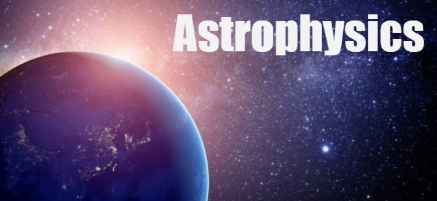
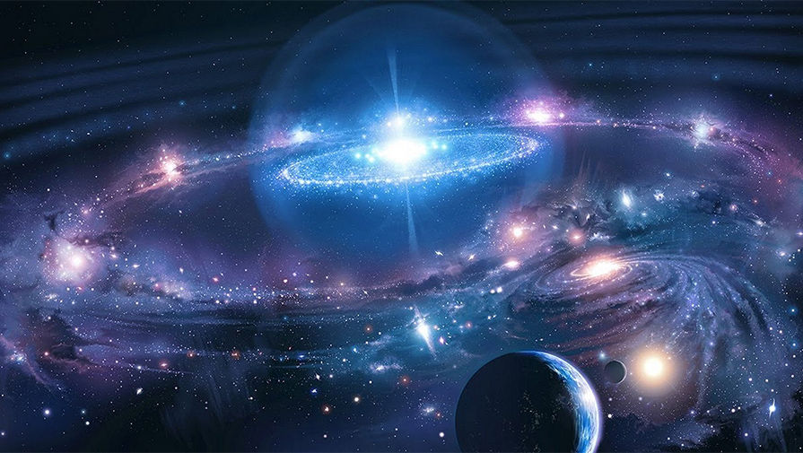

Астрофизиката е клон на астрономията, който изучава преди всичко свойствата на астрономическите обекти във Вселената (плътност, температура, химичен състав и други). Такива обекти могат да бъдат звезди, комети, планети, галактики, междузвездната среда.
Астрономията е една от най-древните науки. Астрофизиката, за разлика от нея, е сравнително нова наука. Името ѝ е предложено през 1865 г.
Астрофизиката изучава физичната природа и еволюцията на космичните обекти, вкл. на Вселената като цяло чрез наблюдения – практическа астрофизика, и чрез интерпретацията им – теоретична астрофизика. През последните десетилетия тази наука става водещо направление в астрономията. Определящ принос за развитието ѝ имат въвеждането на телескопа в астрономичните наблюдения в началото на XVII в., откриването на спектралния анализ и изобретяването на фотографията през XIX в., възникването на фотоелектричните измервания, радиоастрономията извънатмосферната астрономия през XX в.

Теоретична астрофизика
Теоретичната астрофизика се занимава с изучаване на състава и еволюцията на Вселената като система, като създава аналитични модели и теории и ги съпоставя основно с наблюдения тъй като експериментите са значително затруднени поради големината и отдалечеността на обектите. Постиженията на науката и техниката спомагат за усъвършенстването на тези модели и по-добри статистически предвиждания.
Едни от тези теории са тази за тъмната материя, Големият взрив, ΛCDM (ламбда-CDM).
Ядрена астрофизика
Ядрената астрофизика е раздел на физиката, получен при припокриване на области като астрономия, ядрена физика и физика на елементарните частици. Тя изучава и обяснява формирането (посредством ядрени реакции) на химичните елементи. Нейни обекти са ранната Вселена, междузвездната среда, червените гиганти и супернова, които биват изследвани с помощта на комплексни компютърни модели.